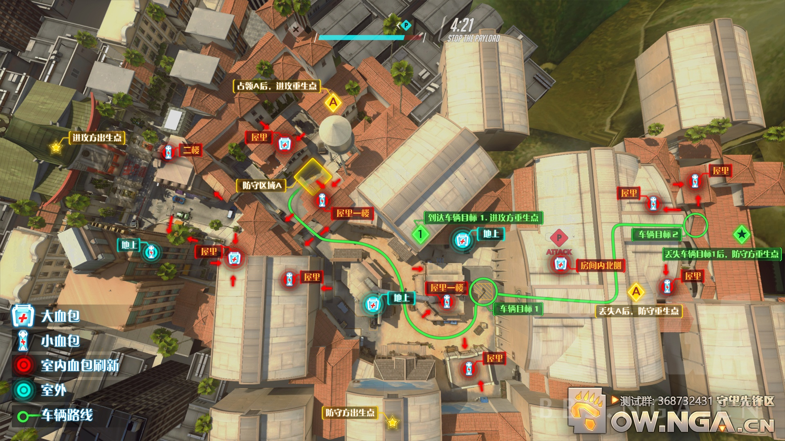
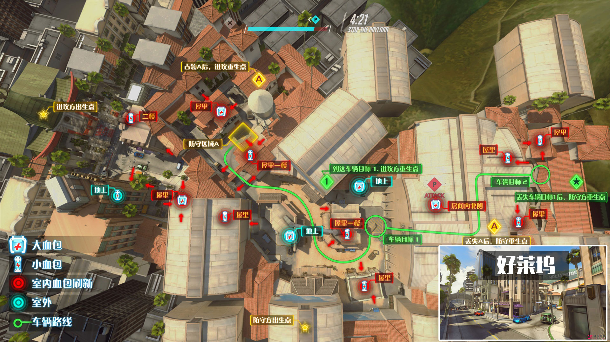
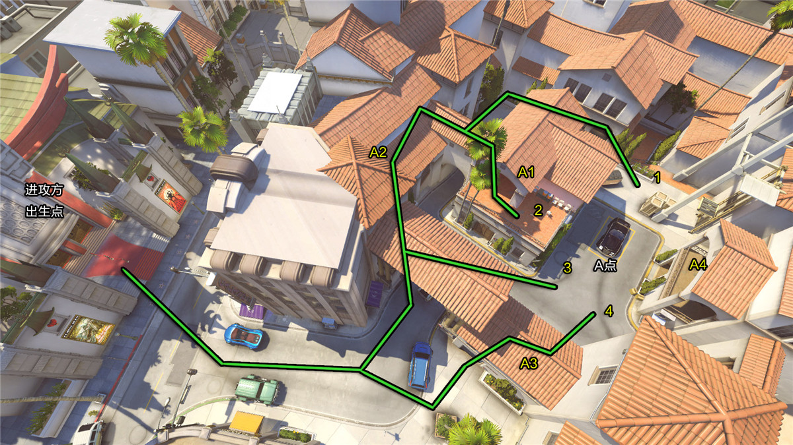

“好莱坞”这张图是典型的占点、推车图。在A点处占点，之后一路推车至C点(目标点2)中途经过B点(目标点1)以及一个室内的影棚。 进攻方出生在A点外的中式风格的电影院内，防守方则出生在B点(目标点1)后面的影棚房间内。
如上图所示，进攻方在攻进好莱坞小镇的大门后有三条路线可以选择：线路1左翼绕后直接到达A点后方，可以有效的消灭或骚扰防守力量，线路2也是从左翼进攻，但是与线路1不同的是，线路2可以直接来到A1点所在房屋的二楼阳台，在此处可以有效打击在A4点驻守的防守力量，线路3是直接从A点正面进攻，容易被齐火，推荐肉盾型的英雄走此路。线路4则不需要从大门进入A点，而是选择从A3点所在的小房间里面穿过，可以配合线路3的肉盾型英雄进攻。
当进攻方成功夺取A点后，如上图所示，进攻方可以选择4条路线进攻B点(目标点1)。 线路1取道左翼进攻B点。线路2从地图中央穿过，然后支援右翼的队友。线路3从右翼进攻B点。线路4绕过B4点所在的房屋，从右翼直接进攻B点。 推荐的防守点：B2、B3均为处在房顶的点，可从高处打击。 B1为处在长廊的点，可以打击前来推车的进攻方力量，容易被集火。 B4位置的房间内是个很好的右翼防守位置，不容易被集火，还能兼顾B点的防守，同时房间内还有血包。
推荐的防守点：P1为二楼高台点，可以有效打击位于一楼的敌人。 P2处在推车的必经之路上，可以打击推车的进攻方英雄。 P3、P4正对着门口，可以有效减缓进攻方的进攻速度。
如上图所示，在VIP字样的方框内的C点便是此图的终点。由于此点距离防守方出生点非常近，属于易守难攻的位置。进攻方可以选择从正面进攻，分别是线路1的左门，线路2的中门以及线路3的右门。而二楼的C1点也是进攻方可以占据的有利据点，直接打击楼下的防守方。